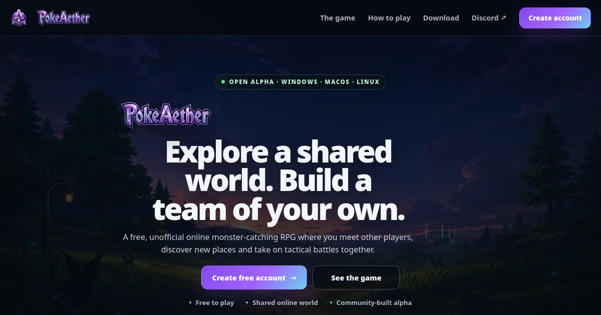
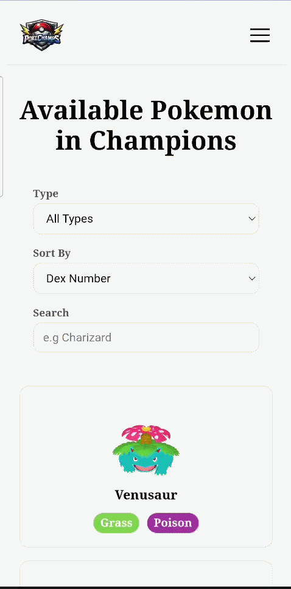
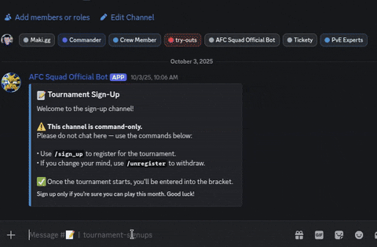
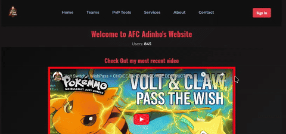

PokeAether — Online Pokémon RPG

Visit the official website
PokeAether is a free online monster-catching RPG where players explore a shared world,
discover new places, and battle together. I created the project and lead its development.
The source code is private, but you can explore the live project on its official website.
Creator & Lead Developer
PokeChamps — Pokémon Team Builder & Analyzer

Click for demo
PokeChamps is a team-building and analysis web application built with Vue 3 and TypeScript.
It allows users to explore Pokémon data, create custom teams, and analyze weaknesses based on
type matchups.
The application is implemented as a Progressive Web App (PWA), supporting offline usage through
service workers and leveraging browser APIs such as notifications and vibration.
Team data is persisted locally using localStorage, demonstrating client-side state management
and data persistence without a backend.
Vue 3
TypeScript
Progressive Web App
Service Workers
Local Storage
Browser APIs
Discord Community Management System

Click for demo — use /help
A community management system built as a Discord bot for a Pokémon MMORPG server.
The system handles moderation, tournament organization, and scheduled events. It is built with
Python and integrates a PostgreSQL database via SQLAlchemy for persistent data storage.
Automation is implemented using scheduled tasks (cron jobs), and the application is
containerized with Docker for deployment and maintainability.
Python
discord.py
SQLAlchemy ORM
PostgreSQL
Docker
Task Scheduling
Pokémon Team Sharing Platform

Click for demo
A full-stack web platform where I share competitive Pokémon teams and strategies with over 7k
subscribers.
Built with Flask and SQLAlchemy, the application supports user accounts, search and filtering
functionality, and dynamic content rendering.
The platform integrates external data sources such as the PokéAPI and parses structured team
data from Pokepaste using BeautifulSoup.
Additional features include role-based content access for Patreon supporters, demonstrating
real-world user management and feature gating.
Python
Flask
SQLAlchemy ORM
REST APIs
Patreon Integration
HTML & CSS